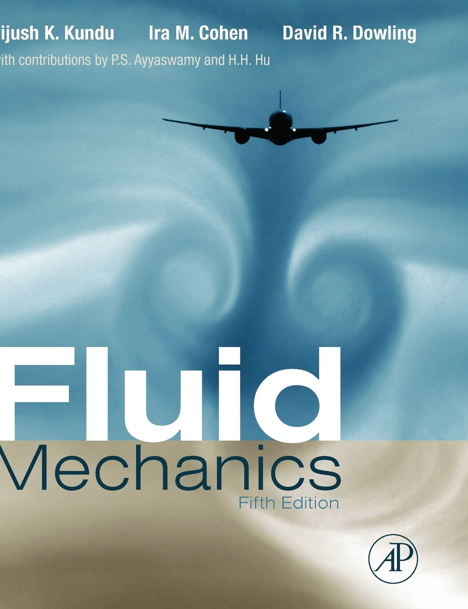

The cover of Fluid Mechanics - 5th Edition by Pijush K. Kundu, Ira M. Cohen, and David R. Dowling illustrates an airplane creating wingtip vortices.
Wingtip vortices are formed when airflow from beneath the wing curls around the wingtip to the upper surface.
Birds also generate wingtip vortices at the tips of their wings. Formula One race cars are also equipped with wing-like diffusers. Their main function is to generate downforce (aerodynamic force directed downward). As a result, the vortices trailing behind the car's rear wing rotate in the opposite direction to an aircraft's wingtip vortices.
(1) Explain the formation of wingtip vortices from both the pressure-difference perspective and the vortex-theory perspective, either in your own words or with equations.
(2) Using appropriate software to plot the streamlines around an airfoil to illustrate the flow field with the aircraft as the reference frame the circulation/vortex pattern with the ground as the reference frame the formation of a starting vortex and wingtip vortices behind the airfoil

(3) Using appropriate software to plot the flow field around an airfoil with streamlines and colored pressure contours to illustrate how wingtip vortices create upwash, downwash, and pressure gradients along the wing span.
1 This problem set contains 6 problems, and your final score will be based on the 4 problems on which you earned the highest scores.